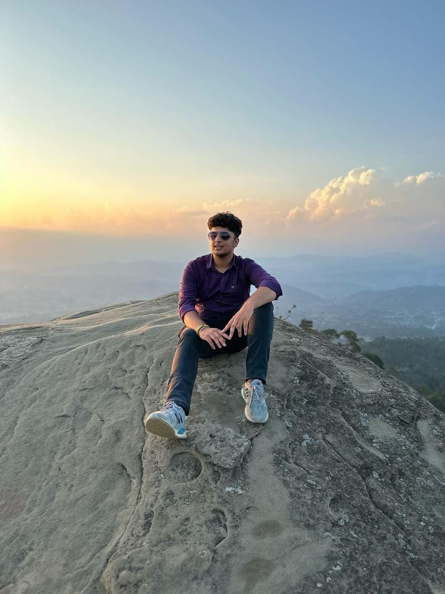

<!DOCTYPE html>
<html>
    <head>
        <title>My Resume</title>
    </head>
</html>
<body>
    <ol>
       <li> <h1>Summary</h1> 
        
        <p>Motivated and adaptable second-year B.Tech CSE student at SRM University, Chennai, with a passion for technology and strong foundations in programming languages including C, C++, Python, Java, HTML, and CSS. Adept at problem-solving and critical thinking, demonstrated through participation in Model United Nations (MUN). Possesses excellent communication skills and a keen interest in leveraging technical expertise to drive innovation and contribute effectively to the IT industry.</p>
    </li>
       
        <li>
            <h1>Education:</h1>
            <ul>
                <li>
                    <h2>B.Tech in Computer Science and Engineering</h2>
                </li>
                
                    <h3>SRM University, Chennai, Tamil Nadu</h3>
                    <h3>Expected Graduation: Sept, 2026</h3>
                    <li>
                        <h2>Higher Secondary (12th Grade)</h2>
                    </li>
                    <h3>Career Point Gurukul, Mohali, Punjab</h3>
                    <h3>Year of Completion: 2022</h3>
                    <h3>Stream: Non-Medical</h3>
                    <li>
                        <h2>Matriculation</h2>
                    </li>
                    <h3>Christ High School, Nowshera, Jammu and Kashmir</h3>
                    <h3>Year of Completion: 2020</h3>
            </ul>
            

        </li>
        <li>
            <h1>Work Experience</h1>
            <ul>
                <li>
                    <h2>Project: Railway Reservation System(C++)</h2>
                    <h3>Description:</h3>
                    <p>Developed a railway reservation system using C++ as part of OODP course. The system allowed users to book tickets, checking availability, the project also had a user login page in which you can creat user id and password to login into the portal.</p>
                </li>
            </ul>
            
        </li>

        <li>
            <h1>Skills</h1>
                <h2>Technical Skills:</h2>
                <ul>
                <li><h3>Programming languages: C,C++,Python,Java etc...</h3></li>
                <li><h3>Web Development: HTML,CSS,Js etc...</h3></li>
                <li><h3>Software Tools: Microsoft Office Suite,Filmora etc...</h3></li>
            </ul>
                
    
        </li>

</ol>
<a href="./contact.html" ><h3>Contact me</h3></a>
    

</body>